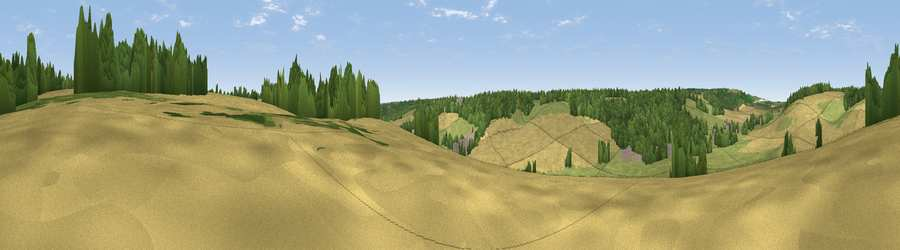

Viewpoint near Hudnall Common
#43910 in England · top 77% of its area beats it · near Hudnall CommonThe view, rendered

A 360° render of this exact spot computed from the terrain model, tree cover and land cover — summer colours, afternoon light, calibrated against photographs of famous viewpoints. Real trees, hedges and buildings will differ in detail.
The panorama
Grey silhouette: terrain skyline in each direction (720 bearings, Earth curvature and refraction included). Dashed green: skyline with trees (+15 m) and buildings (+8 m) as obstacles. Blue strip: how far the ground is visible on each bearing.
Where the view opens
Wedge length = distance to the farthest visible ground on that bearing (vegetation-aware). Rings at 10, 25 and 50 km.
What fills the view
41% cropland · 30% woodland · 27% grassland · 1% built-up
Angular shares of the visible panorama (visual magnitude), not map area. Landscape diversity 0.49 (0–1 Shannon).
Key numbers
More beautiful places nearby
The staircase of upgrades: each row has a higher view potential than everything closer. Driving times are estimates from straight-line distance, calibrated against real road routing — check an actual route before setting out.
| Place | Direction | Drive | Score |
|---|---|---|---|
| Viewpoint near Hudnall Common | NW · 1 km | ~3 min | 27.2 |
| Viewpoint near Whipsnade | NNW · 5 km | ~11 min | 59.5 |
| Viewpoint near Whipsnade | NNW · 6 km | ~12 min | 65.2 |
| Viewpoint near Ivinghoe | WNW · 7 km | ~14 min | 66.7 |
| Beacon Hill | WNW · 7 km | ~14 min | 74.1 |
| Viewpoint near Halton | WSW · 14 km | ~25 min | 74.3 |
| Coombe Hill Monument | WSW · 18 km | ~32 min | 75.5 |
| Viewpoint near Woolstone | WSW · 77 km | ~101 min | 76.7 |
51.81061, -0.52150 · source: screening · position refined by local search. Computed location — check access rights before visiting.